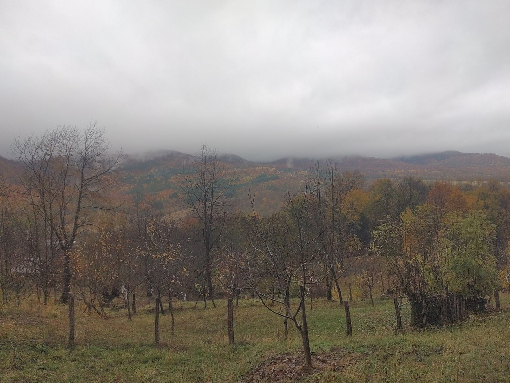
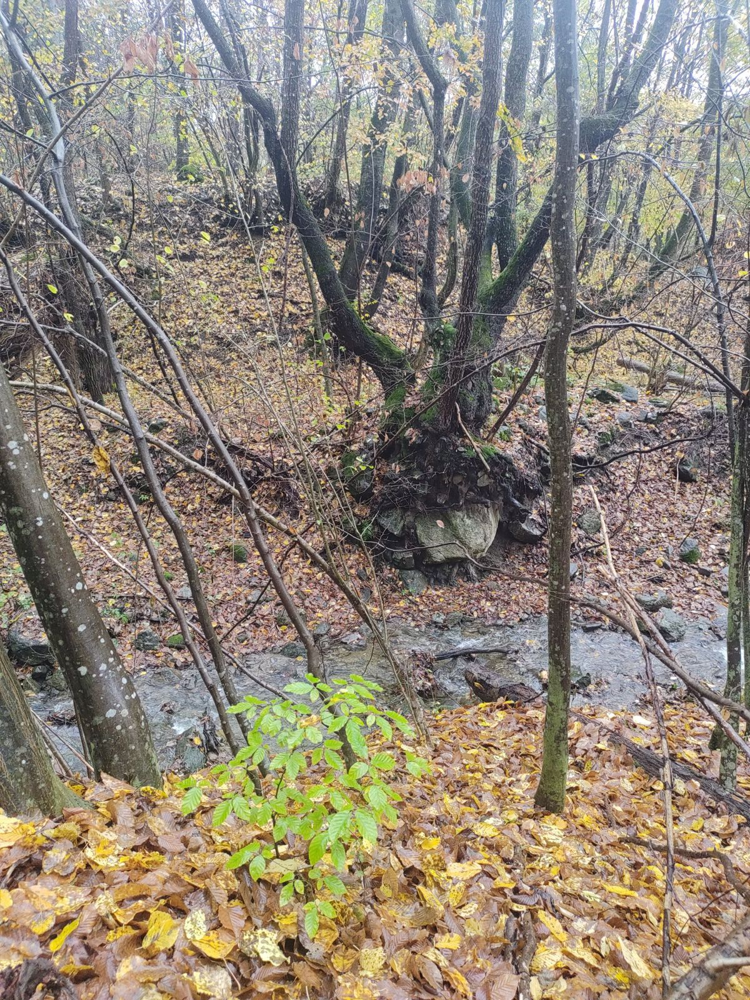
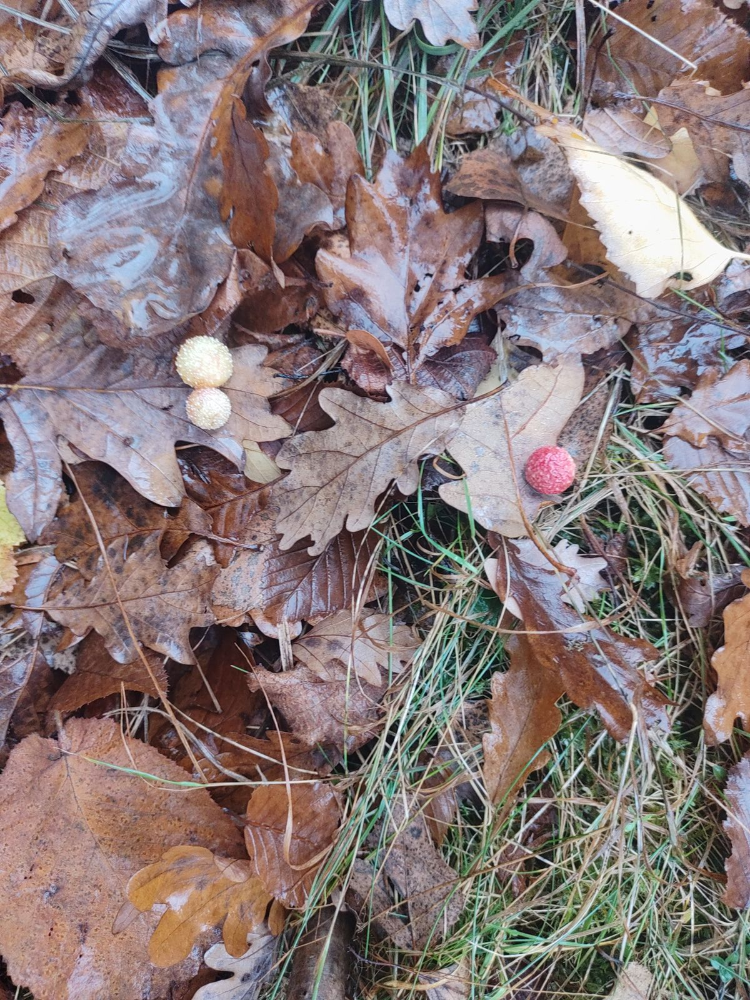
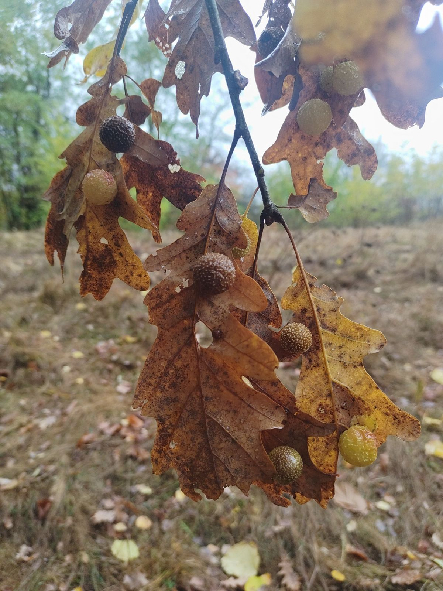
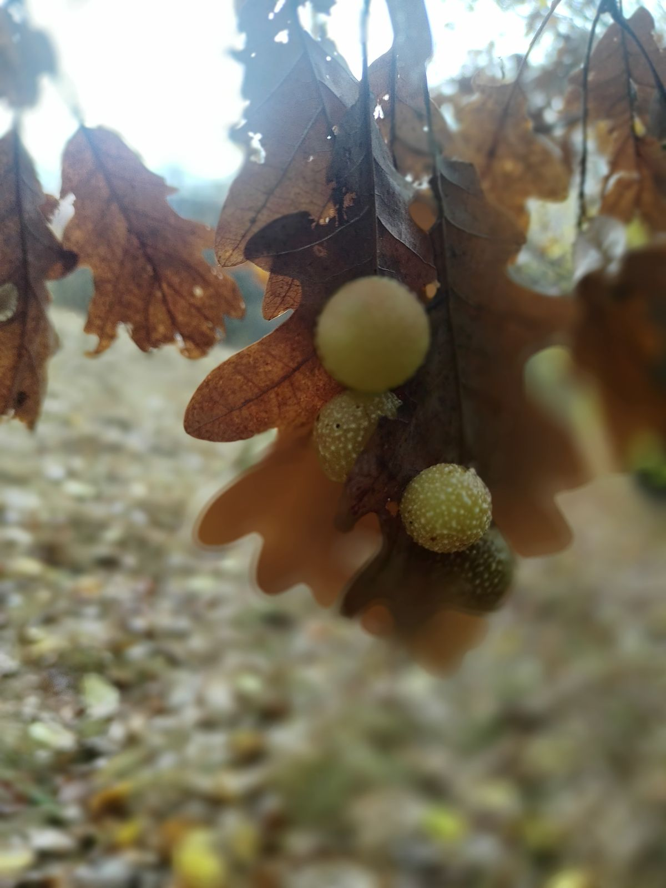

În ultima zi a vacanței de toamnă, vremea a fost ca într-o zi de toamnă târzie: o ploaie măruntă și de lungă durată, iar cerul închis, cu norii atât de jos, încât ai fi zis că, dacă urci pe un deal mai înalt, îi poți atinge.

Cu toate astea, nu ne-am speriat. Am ieșit din casă să cercetăm natura în splendoarea ei din această etapă a anului. Pe pârâu începuse să vuiască apa, semn de bogăție și prosperitate. Sub frunzele așezate ca un covor ne așteptam să găsim ciuperci, dar de data asta nu ne-au surprins. Natura ne pregătise altceva.

🍂 O descoperire pe frunze
Ce am găsit în schimb, și ne-a atras imediat atenția, au fost niște bile colorate în culorile toamnei, lipite pe frunzele de stejar. Ne-am oprit să le observăm și parcă nu se mai terminau: cu cât ne uitam mai atent, cu atât descopeream mai multe.

🎄 Globuri pentru stejar
Copiii au avut imediat o explicație: sunt globuri care împodobesc stejarul, numai că la el Crăciunul începe toamna.

🔍 Ce sunt, de fapt?
Arată ca niște fructe, dar nu sunt. Se numesc gale, iar popular li se mai spune gogoși de stejar. Le face o viespe foarte mică, Cynips quercusfolii. Vara, femela își depune ouăle în nervurile de pe dosul frunzei, iar stejarul crește în jurul fiecărui ou o bilă rotundă.

🐝 O casă pentru o viață nouă
Înăuntrul fiecărei bile e o singură cămăruță, iar acolo crește larva viespii. Frunza o hrănește și o adăpostește toată vara. Toamna, galele cad odată cu frunzele, iar din ele ies, în timpul iernii, viespile din noua generație.
🌳 Ce am învățat
Ce părea un simplu glob de toamnă era, de fapt, casa unei viespi. De obicei galele nu-i fac rău stejarului și fac parte din viața lui, la fel ca păsările din crengi sau ciupercile de la rădăcină.
Am plecat acasă încărcați cu energia pârâului și a copacilor, și cu o lecție de biologie despre aceste minunate bile.